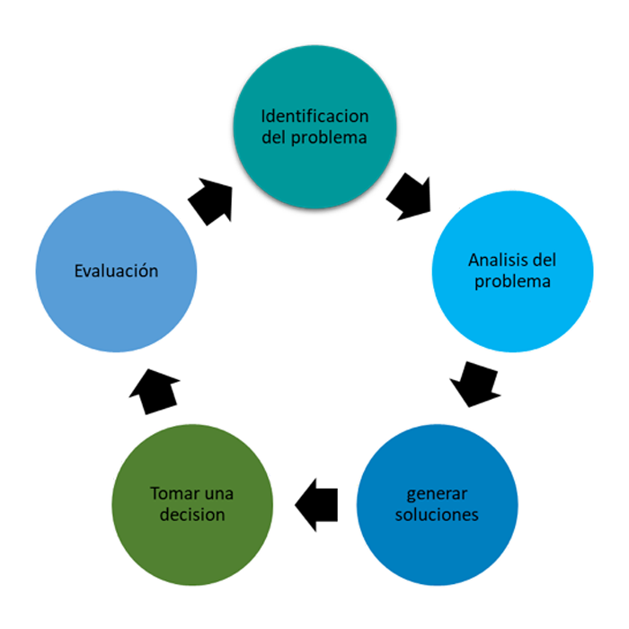

|
SOLUCIÓN DE PROBLEMAS |
|
Solución de problemas como definición o significado, consiste en identificar, analizar y aplicar la conclusión a una circunstancia y que permita continuar el proceso para alcanzar los resultados deseados. LAS TÉCNICAS MÁS UTILIZADAS PARA IDENTIFICAR EL PROBLEMA SONTormenta de ideas Análisis de Pareto Votación Reducción de listado Entrevistas Encuestas |
|  |
|
CASOS DE EJEMPLOS DE SOLUCIÓN DE PROBLEMAS Solución de problemas de seguridad. Solución de problemas con el soporte multicultural. Solución de problemas de conexión de listas de sucesos (Windows). Solución de errores de escucha de ObjectServer (UNIX y Linux). Solución de problemas optimización de almacenamiento. Solución de problemas de integración. Solución de problemas de visualización (UNIX y Linux). |
|
 VER Infografía VER Infografía
|
Tema por : Sánchez Martínez Nahomi Gabriela SOFTWARE |
| Anterior | Menú | Siguiente |